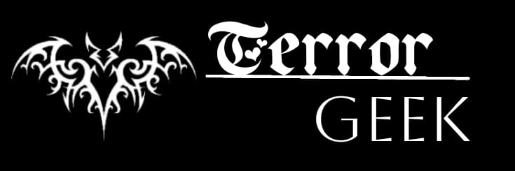

|  |
|---|
Dois episódios curiosos ocorreram com a equipe por trás do filme. O primeiro foi durante a pré-produção, quando o diretor John R. Leonetti percebeu uma marca de três dedos na poeira de uma das janelas do set (vale lembrar que a boneca amaldiçoada que dá nome ao longa só tem três dedos). Já o segundo foi mais sério. O produtor Peter Safran contou ao The Hollywood Reporter que uma luminária de vidro enorme caiu na cabeça de um ator que fez papel de zelador – isso logo após Joseph Bishara, que interpretou o vilão demoníaco, passar por debaixo do objeto usando sua maquiagem apavorante completa. "No roteiro, o demônio mata o zelador naquele corredor [do acidente]. Foi totalmente bizarro", apontou Safran.